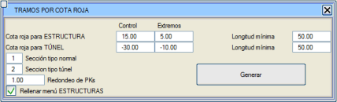

| |
|
KIRMIZI KOT DEĞERİNE GÖRE BÖLÜMLER
|
Bu menü, optimizasyon yapmak amacıyla, yapı ve tünel bölümlerinin genel bölümlendirmeye otomatik olarak eklenmesini sağlar. 
Bunun için aşağıdaki parametreleri kullanır:
Bu yapıların ve tünellerin başlangıç ve bitiş KM'lerini yerleştirmek için, program diğer uç kırmızı kot değerlerini girmeye izin verir (bunlar mutlak değer olarak daha küçük olmalıdır).
Örneğin, yapı için kontrol değeri olarak 15 ve uç değer olarak 5, minimum uzunluk 50 olarak belirtilirse, program kırmızı kotun 50 metreden daha uzun bir süre boyunca 15 metreyi aştığı bölümlere bir viyadük yerleştirir, ancak kenar ayakları kırmızı kotun 5 metreye düştüğü yere yerleştirir. Başka bir örnek, minimum uzunluğu 100 olan, kontrol değeri -30 ve uç değeri -15 olan bir tünel durumu olacaktır. Bu durumda, kırmızı kotun 100 metreden daha uzun bir süre boyunca -30 metreden daha düşük olduğu yere bir tünel yerleştirilir, ancak ağızları kırmızı kotun -15 metreye ulaştığı yere yerleştirir.
|